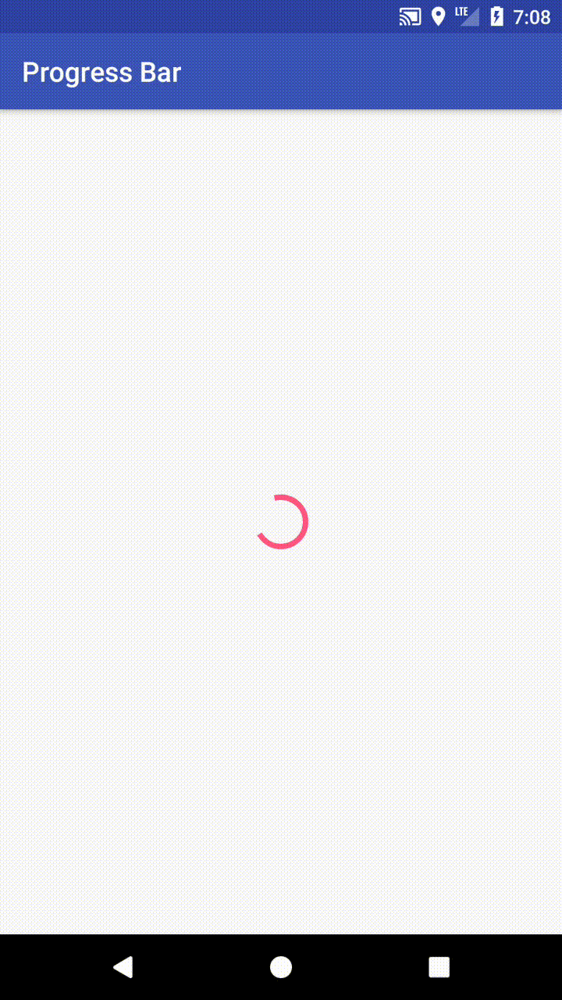
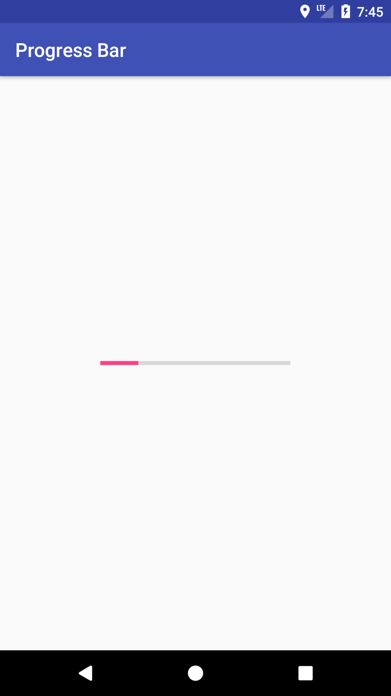

Introduction
ProgressBar是在Android常見的元件，尤其是在materials design上，依照 UI 上顯示的方式，可以初步分類成兩種：
1.Linear長條形
2.Circular圓型
接下來我們來看看如何使用。
Create a Circular Progress Bar
在layout文件下，直接引用ProgressBar
layout:1
2
3
4<ProgressBar
android:id="@+id/progress_id"
android:layout_width="wrap_content"
android:layout_height="wrap_content"/>
運行效果如下：

ProgressBar顏色預設是使用@color/colorAccent，想要改變顏色，需先創建一個新style，並自訂colorAccent的顏色
styles.xml:1
2
3
4
5
6<resources>
...
<style name="ProgressTheme" parent="Widget.AppCompat.ProgressBar">
<item name="colorAccent">@color/colorDeepOrangeA200</item>
</style>
</resources>
接著在ProgressBar添加屬性android:theme為我們自定義的新style1
android:theme="@style/ProgressTheme"
運行效果如下：
Create a Linear Progress Bar
Linear Progress Bar 依照顯示的型態，又可細分成4項
1.Determinate(定值)
-有定值，顯示在進度條上，需要定義當前值與最大值
2.Indeterminate(不定值)
-無定值，UI顯示上會從進度條開始，快速到結束，重複循環
3.Buffer(緩衝)
-影片或加載圖片很常用到的緩衝進度條，通常是顯示在確定值的後方
4.Query Indeterminate and Determinate (混合)
-結合 Determinate 和 Indeterminate 的進度條
創建一個Linear Progress Bar，方法很簡單，在剛剛創建的ProgressBar添加上一條style屬性，此時就會發現ProgressBar已經顯示為長條形1
style="@style/Widget.AppCompat.ProgressBar.Horizontal"
接著再加上一條屬性android:indeterminate，表示ProgressBar為不定值，會像 Circular Progress Bar 一樣，有循環的效果1
android:indeterminate="true"
運行效果如下：
接下來我們來創建 Determinate(定值) ProgressBar
先把屬性android:indeterminate，設為false1
android:indeterminate="false"
接著設定屬性進度值與最大值，Android會自動換算成百分比1
2android:progress="20"
android:max="100"
當然也可以在代碼裡設定1
2progressBar.setProgress(20);
progressBar.setMax(100);
運行效果如下：

使用Buffer(緩衝) ProgressBar，需在ProgressBar裡添加屬性 android:secondaryProgress，就可以在畫面上，看見一條緩衝進度條效果1
android:secondaryProgress="40"
當然也可以在代碼裡設定1
progressBar.setSecondaryProgress(40);
運行效果如下：